Contents
- Continuation and stability of periodic orbits
- Constructing an initial small-amplitude orbit near a Hopf bifurcation
- Construction of an initial piece of the branch of periodic orbits
- Figure: branch of periodic orbits
- Stopping criterion
- Figure: Periodic orbit with state-dependent delay equal to 0
- A second family of periodic orbits - correction of initial orbit
- Creation and continuation of branch
- Figure: 2nd branch of periodic orbits
- Figure: delay 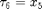 at last point of branch
- Stability of periodic orbits
- Figure: Floquet multipliers of last periodic orbit in branch4
- Save results, end of demo sd_demo
Continuation and stability of periodic orbits
DDE-biftool computes one-parameter families of periodic orbits (automatically determining their period) by solving periodic boundary-value problems approximately with collocation schemes. A typical starting point for a family of periodic orbits is a Hopf bifurcation. This demo requires sd_demo_hopf.html to have run beforehand.
% (c) DDE-BIFTOOL v. 3.1.1(20), 11/04/2014
%#ok<*ASGLU,*NOPTS,*NASGU>
Constructing an initial small-amplitude orbit near a Hopf bifurcation
We use the first Hopf point in the branch2 to construct a small amplitude (1e-1) periodic solution on an equidistant mesh of 15 intervals with piecewise polynomial degree 3.
The steplength condition returned ensures the branch switch from the Hopf to the periodic solution as it avoids convergence of the amplitude to zero during corrections. Due to the presence of the steplength condition we also need to free one parameter, here 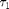 (parameter 10).
hopf=branch2.point(1); intervals=15; degree=3; [psol,stepcond]=p_topsol(funcs,hopf,1e-1,degree,intervals); method=df_mthod(funcs,'psol'); % correct periodic solution guess: [psol,success]=p_correc(funcs,psol,10,stepcond,method.point)
psol =
kind: 'psol'
parameter: [1x11 double]
mesh: [1x46 double]
degree: 3
profile: [5x46 double]
period: 11.4306
success =
1
Construction of an initial piece of the branch of periodic orbits
The result, along with a degenerate periodic solution with amplitude zero, is used to start on the emanating branch of periodic solutions, see figure below. We use adaptive mesh selection. Note that in the case of sd-DDEs, min_bound for a constant delay being a continuation parameter should be defined in the same way as for other continuation parameters.
branch3=df_brnch(funcs,10,'psol'); % empty branch branch3.parameter.min_bound(1,:)=[10 0]; % lower and branch3.parameter.max_bound(1,:)=[10 10]; % upper bound of p10 branch3.parameter.max_step(1,:)=[10 0.01]; deg_psol=p_topsol(funcs,hopf,0,degree,intervals); branch3.point=deg_psol; % use deg_psol and psol as first two points on branch branch3.point(2)=psol; figure(4); clf; [branch3,s,f,r]=br_contn(funcs,branch3,10); % compute periodic solutions branch % indicate the last computed point on the branch point=branch3.point(end); p_ampl=max(point.profile(1,:))-min(point.profile(1,:)); plot(point.parameter(10),p_ampl,'o'); xlabel('p10');ylabel('max(x1)-min(x1)');
BR_CONTN warning: delay number_3 becomes negative.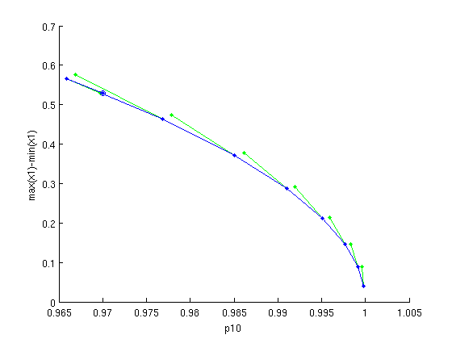
Figure: branch of periodic orbits
Branch of periodic solutions emanating from a Hopf bifurcation point. o - the last computed point in the branch (corresponding to 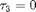 at t=tz).
Stopping criterion
As in the case of computing branch1, we have a warning, BR_CONTN warning: delay number_3 becomes negative. indicating that the delay function 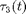 became negative at some point(s) on the period interval of the computed solution during continuation of the branch. The periodic solution with negative is not accepted as the branch point. Instead, the following algorithm is executed. First, using the solution with negative and a mesh refinement, a time point tz is computed at which reaches its minimum. Then, a periodic solution is computed under the conditions, 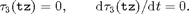 We compute and plot the delay on the mesh of representation points at the last accepted point in the branch, see figure below.
tau_eva=p_tau(funcs,branch3.point(end),3); figure(5); clf; plot(branch3.point(end).mesh,tau_eva); hold on; plot(branch3.point(end).mesh,tau_eva,'.'); xlabel('t/period');ylabel('x5'); min(tau_eva)
ans = 8.4445e-04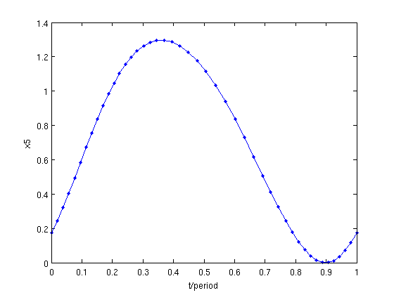
Figure: Periodic orbit with state-dependent delay equal to 0
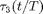 at the last computed point. Dots indicate representation points of the mesh used. The value of tau_eva shows that has its minimal value at a point between two representation points.
A second family of periodic orbits - correction of initial orbit
Now we use the last Hopf point in the branch2 to compute a branch of periodic solutions as a function of the parameter 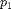, see figure below.
hopf=branch2.point(end); intervals=15; degree=3; [psol,stepcond]=p_topsol(funcs,hopf,0.1,degree,intervals); method=df_mthod(funcs,'psol'); % correct periodic solution guess [psol,success]=p_correc(funcs,psol,1,stepcond,method.point)
psol =
kind: 'psol'
parameter: [1x11 double]
mesh: [1x46 double]
degree: 3
profile: [5x46 double]
period: 12.6610
success =
1
Creation and continuation of branch
This branch is continued in parameter 1 following the standard procedure.
branch4=df_brnch(funcs,1,'psol'); % empty branch branch4.parameter.min_bound(1,:)=[1 0]; % lower and branch4.parameter.max_bound(1,:)=[1 10]; % upper bound for p1 branch4.parameter.max_step(1,:)=[1 0.01]; % max predictor step for p1 deg_psol=p_topsol(funcs,hopf,0,degree,intervals); branch4.point=deg_psol; % use |deg_psol and branch4.point(2)=psol; % psol as first two points on branch figure(6); clf; [branch4,s,f,r]=br_contn(funcs,branch4,20); % compute periodic solutions branch % indicate the last computed point on the branch point=branch4.point(end); p_ampl=max(point.profile(1,:))-min(point.profile(1,:)); plot(point.parameter(1),p_ampl,'o'); xlabel('p1');ylabel('max(x1)-min(x1)');
BR_CONTN warning: delay number_6 becomes negative.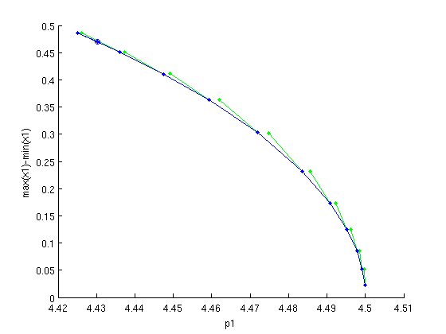
Figure: 2nd branch of periodic orbits
Branch of periodic solutions emanating from a Hopf point. o - the last computed point in the branch (corresponding to 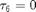 at tz).
We again have a warning, BR_CONTN warning: delay number_6 becomes negative We plot the delay 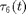 (recall that 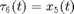) on the mesh of representation points at the last accepted point in the branch, see figure below.
psol=branch4.point(end); % plot delay 6 at representation points at the last point figure(7); clf; plot(psol.mesh,psol.profile(5,:)); hold; plot(psol.mesh,psol.profile(5,:),'.'); min(psol.profile(5,:)) xlabel('t/period');ylabel('x5');
Current plot held ans = 2.7579e-05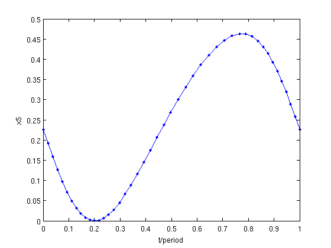
Figure: delay at last point of branch
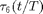 at the last computed point. Dots indicate representation points of the mesh used.
The minimal value of the delay  is a negative value. The stability of the corresponding solution is computed if this value is larger than the one defined in method.stability.delay_accuracy.
is a negative value. The stability of the corresponding solution is computed if this value is larger than the one defined in method.stability.delay_accuracy.
Stability of periodic orbits
The result of computing and plotting stability (Floquet multipliers) of this periodic solution is shown in the figure below. The solution is unstable.
psol.stability=p_stabil(funcs,psol,method.stability); psol.stability.mu figure(8); clf; p_splot(psol); axis image; xlabel('\Re\mu'); ylabel('\Im\mu');
ans =
1.3253
1.0000
0.0959
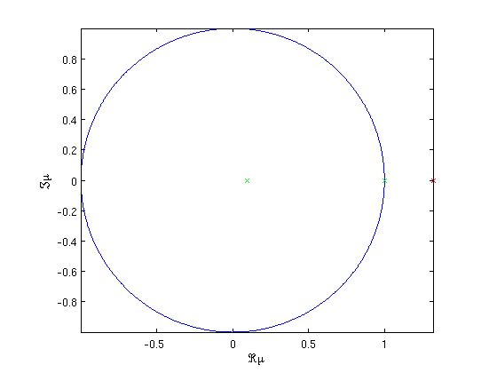 Figure: Floquet multipliers of last periodic orbit in branch4
Save results, end of demo sd_demo
save('sd_demo_psol');